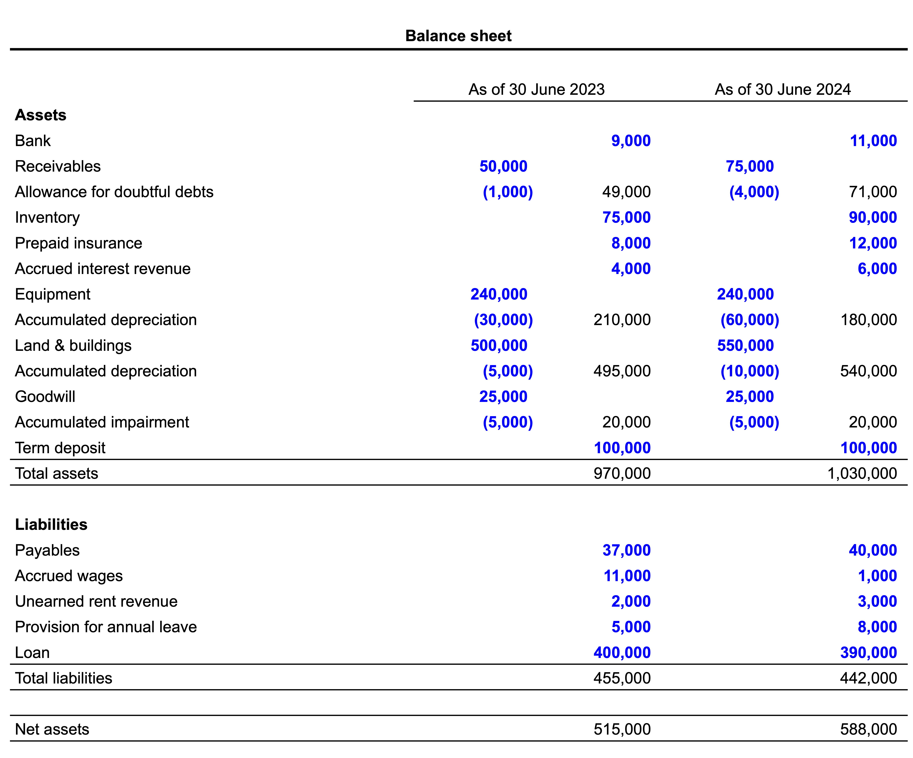
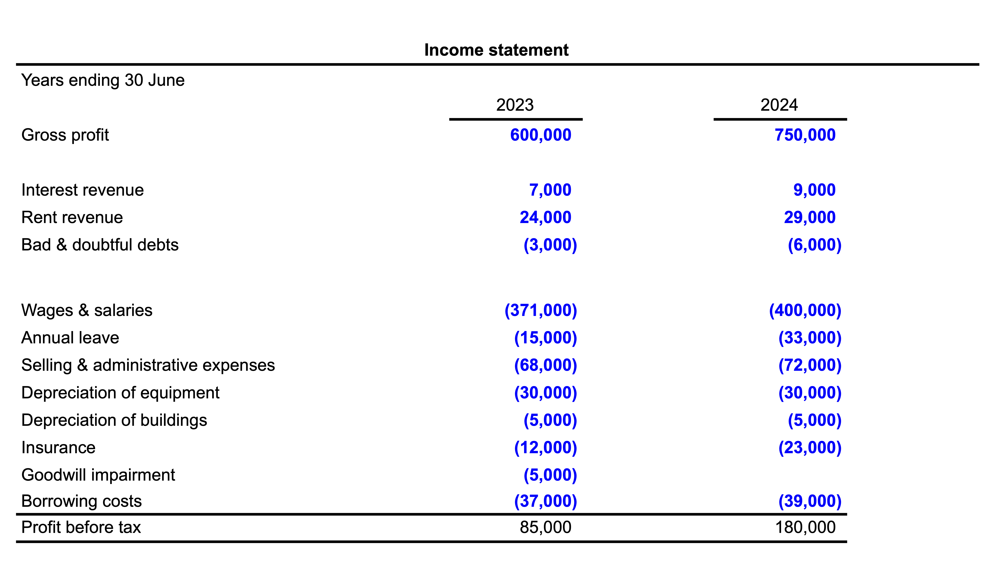

2 Accounting for income tax
I think this chapter was an initial draft that was never fully developed.
This chapter introduces the accounting for income taxes. The relevant accounting standard is AASB 112 (IAS 12) Income taxes.
Taxes owed are based on taxable income, which can differ from pre-tax profits in two ways:
- Whether an item is included as an addition to, or subtraction from, taxable income
- When an item is included as an addition to, or subtraction from, taxable income
If a component of accounting income is not included as an addition to, or subtraction from, taxable income, this gives rise to a permanent difference. If a component of accounting income is included in taxable income with different timing, we have a temporary difference.
2.1 Deferred taxes: The basic idea
Suppose we acquired a piece of equipment at the start of a fiscal period for $100,000. Tax rate is 30%. For tax purposes, depreciation is 50% in the first year, 30% in the second year, and 20% in the third year. For financial reporting, depreciation is straight-line over five years.
At the end of the first year, the asset has a carrying value of $80,000, but tax base of $50,000. If we were to realise the asset at the end of the first year at its carrying value, we would owe taxes on the difference between $80,000 and $50,000, or 30% of $30,000 = $9,000. In effect, we recognise this obligation based on a hypothetical transaction as a liability, a deferred tax liability. Similar reasoning can be applied to, say, accrued expenses: if we cashed them out at carrying value, we’d get a deduction, and we recognize this benefit as a deferred tax asset.
2.2 Permanent differences
Permanent differences between accounting profit and taxable income arise when the treatment of a a component of accounting income is not included in taxable income (either not assessed or not deducted) Examples:
- Non-assessable income: capital gains on pre-1985 investments; some foreign income.
- Non-deductible expenses: entertainment, goodwill impairment.
- Tax incentives: Deduction allowed for 125% of expenditure on certain R&D, with the extra 25% never being recognised in accounting profit.
2.3 Temporary differences
| Item | Accounting treatment | Treatment under ITAA |
|---|---|---|
| Depreciation | Accrued expense | Deductible, but using different schedule |
| Cash received from customers | Revenue recognized based on performance of obligations | Assessed when collected |
| Revenue on account | Recognized based on performance of obligations | Assessed based on amounts billed |
| Bad and doubtful debts | Expensed based on expected non-payment | Deducted when written off |
| Prepaid expenses | Recognized as asset | Deducted when paid |
| Accrued expenses | Recognized as a liability | Deducted when paid |
2.4 Current tax worksheet
- Calculates taxable income, hence tax payable, for the current period
- Starts with accounting profit for the period
- Adjusts accounting profit to reflect differences between
- Assessable items and accounting revenue or gains
- Deductible items and accounting expenses or losses
2.5 Deferred tax worksheet
Formally the steps are, for each asset and liability item in the balance sheet:
- Calculate the carrying amount
- Determine the tax base
- Determine and classify the temporary differences
- Deductible temporary differences
- Carrying amount of asset < tax base of asset
- Carrying amount of liability > tax base of liability
- Taxable temporary differences
- Carrying amount of asset > tax base of asset
- Carrying amount of liability < tax base of liability
- Sometimes it is easier to use shortcuts. For example, goodwill impairment is not deductible, but no deferred taxes apply to goodwill, so we can “plug” step 2 to achieve this result.
2.6 Tax losses
Tax losses occur when allowable deductions exceed taxable revenue Tax losses in general do not result in amounts being paid by the tax authorities to the taxed entities Instead, tax losses are offset against taxable income from other years For example, under the Income Tax Assessment Act (1997) (or ITAA), companies can carry forward losses to reduce tax obligations in subsequent years. However, exempt income loses its exempt status in the context of tax losses Tax losses are carried forward after offsetting exempt income Exempt income is included in the calculation of taxable income when tax losses are applied See 13.4.1 of the textbook for more on tax losses
2.7 Recognition of deferred taxes
Paragraph 24 says that “a deferred tax asset shall be recognised for all deductible temporary differences to the extent that it is probable that taxable profit will be available against which the deductible temporary difference can be utilised.” For example, tax losses can only give rise to recognized deferred tax assets if it probable that there will be taxable income in the future.
Assessing this requires looking at the future prospects of the business, including business plans and other evidence of future prospects.
2.8 Deferred taxes: Comprehensive example


2.8.1 Additional information: 2023
For tax purposes the following interest and rent income are assessable based on actual amounts received.
- Interest $3,000
- Rent $26,000
For tax purposes the following items are allowable deductions based on actual amounts paid:
- Wages $360,000
- Annual leave $10,000
- Insurance $20,000
For tax purposes the allowable deduction based on bad debts written-off is $2,000
For tax purposes the estimated useful lives to be used for determining the allowable deduction for depreciable assets are:
- Equipment 10 years
- Buildings 25 years
- Note: Buildings have a cost base of $200,000
Selling & administrative expenses include entertainment expenses of $10,000 that are not deductible. Goodwill impairment is not deductible.
2.8.2 Required: 2023
- Complete Smart-Track Ltd’s current tax worksheet taxable provided for 2023
- Complete the deferred tax worksheet provided for 2023
- Prepare the necessary journal entries with respect to income tax adjustments on 30 June 2023
- Complete the ledger accounts provided
| Current tax worksheet | 2023 |
|---|---|
| Pre-tax profit | 85,000 |
| Unearned rent revenue | 2,000 |
| Accrued wages | 11,000 |
| Provision for annual leave | 5,000 |
| Doubtful debts | 1,000 |
| Tax depreciation of equipment | (24,000) |
| Accounting depreciation of equipment | 30,000 |
| Entertainment expenses | 10,000 |
| Goodwill impairment | 5,000 |
| Accrued interest revenue | (4,000) |
| Pre-paid insurance | (8,000) |
| Tax depreciation of buildings | (8,000) |
| Accounting depreciation of buildings | 5,000 |
| Taxable profit | 110,000 |
| Current tax | 33,000 |
| Instalments paid | |
| Current tax payable | 33,000 |
2.8.3 Additional information: 2024
Smart-Track Ltd paid $55,000 to the ATO during the year which included the tax payable from the previous year and $22,000 in tax instalments relating to the current tax year.
The following interpretations have been extracted from the Income Tax Assessment Act for the purposes of calculating taxable income:
Assessable items
For tax purposes the following items are assessable based on actual amounts received:
- Interest $7,000
- Rent $30,000
Land has been revalued upwards by $50,000.
This unrealised gain will not be assessable until the asset is sold.
Allowable deductions
For tax purposes the following items are allowable deductions based on actual amounts paid:
- Wages $410,000
- Annual leave $30,000
- Insurance $27,000
For tax purposes the allowable deduction based on actual bad debts written-off is $3,000
For tax purposes the estimated useful lives to be used for determining the allowable deduction for depreciable assets have not changed since 2013.
2.8.4 Required: 2024
- Complete Smart-Track Ltd’s current tax worksheet taxable provided for 2024.
- Complete the deferred tax worksheet provided for 2024.
- Prepare the necessary journal entries with respect to income tax adjustments on 30 June 2024.
| Current tax worksheet | 2024 |
|---|---|
| Pre-tax profit | 180,000 |
| Unearned rent revenue | 1,000 |
| Accrued wages | (10,000) |
| Provision for annual leave | 3,000 |
| Doubtful debts | 3,000 |
| Tax depreciation of equipment | (24,000) |
| Accounting dep of equipment | 30,000 |
| Entertainment expenses | |
| Goodwill impairment | |
| Accrued interest revenue | (2,000) |
| Pre-paid insurance | (4,000) |
| Tax depreciation of buildings | (8,000) |
| Accounting depreciation of buildings | 5,000 |
| Taxable profit | 174,000 |
| Current tax | 52,200 |
| Instalments paid | 22,000 |
| Current tax payable | 30,200 |
| Item | Carrying amount | Tax base | Deductible differences | Taxable differences |
|---|---|---|---|---|
| Assets | ||||
| Bank | 9,000 | 9,000 | ||
| Net receivables | 49,000 | 50,000 | 1,000 | |
| Inventory | 75,000 | 75,000 | ||
| Prepaid insurance | 8,000 | 8,000 | ||
| Accrued interest revenue | 4,000 | 4,000 | ||
| Equipment | 210,000 | 216,000 | 6,000 | |
| Land | 300,000 | 300,000 | ||
| Buildings | 195,000 | 192,000 | 3,000 | |
| Goodwill | 20,000 | 20,000 | ||
| Term deposit | 100,000 | 100,000 | ||
| Liabilities | ||||
| Payables | 37,000 | 37,000 | ||
| Accrued wages | 11,000 | 11,000 | ||
| Unearned rent revenue | 2,000 | 2,000 | ||
| Provision for annual leave | 5,000 | 5,000 | ||
| Loan | 400,000 | 400,000 |
2.9 Disclosures
Entities are required to disclose items such as:
- Current tax expense
- Deferred tax expense
- Benefit arising from recognition of a previously unrecognized tax loss
See 13.7 of the textbook for more on disclosure requirements.
Use Qantas as an example of disclosures.
2.10 Changes in tax rates
If tax rates change, then the amount of deferred tax assets and liabilities calculated using the deferred tax worksheet will change. See 13.6 of the textbook for an example.
2.11 Accounting for income taxes: Fundamental principle
Putting aside permanent differences, any issues with the recoverability of deferred tax assets, any differences in tax rates across jurisdictions in which the firm operates, and any changes in tax rates, income tax expense should equal the tax rate times pre-tax income. This relation forms the basis of a key disclosure: the reconciliation between income tax expense and the tax implied by profit (or loss) before taxes.